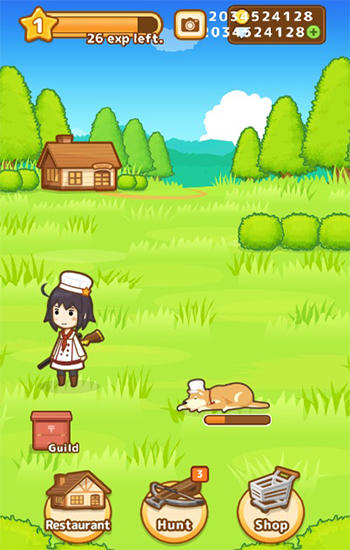

Food Rush
Team : lt5gds studio
Ade, Asti, Dika, Esa, Olga, Yogi
- Target Audience: 18 or below ages and for boys and girls
- Gamer Type: casual gamer
- Target Platforms: mobile platform (android device)
- Genre: Puzzle, adventure
- Number of Players: single player
- Projected Release Date: end of December 2017
High Concept Statement
Pada game Food Rush, player akan bermain dengan memainkan karakter bernama aisha yang diharuskan mencari bahan makanan. Makanan akan tersedia pada 4 tempat yaitu home, hills, dock/beach, dan river dalam jangka waktu yang terbatas yang direpresentasikan dalam hunger bars yang akan berkurang setiap detiknya dan akan bertambah ketika player berhasil memasak makanan dengan menggabungkan/memilih 3 bahan makanan(ingredients) dan alat masak(utensil) yang tepat pada kitchen yang ada di dalam rumah di home. Bahan makanan yang didapat berasal dari sumber makanan yang umum seperti pada cow(sapi) player bisa mendapatkan dairy product seperti meat, milk, cream, cheese dan lain sebagainya. Ingredients dan utensil yang tepat selain akan menghasilkan suatu makanan dan menambah hunger bar, akan membuka(unlock) resep(recipe) dari makanan tersebut dimana recipe yang terbuka merupakan achievement dari game ini. selain recipe yang merupakan achievement dari game Food Rush ini, waktu selama survive dari hunger bars juga akan dihitung sebagai poin time of survive yang akan masuk dalam global leaderboard.
Pada game ini, player dapat menggerakkan karakter menggunakan virtual controller berupa arrow yang merepresentasikan arah yang dituju dari karakter yaitu atas bawah kiri dan kanan. Untuk mendapat ingredients, player harus berjalan menuju wilayah yang diinginkan (home, hills, dock/beach, dan river) dimana pada wilayah tersebut terdapat resource yang dibedakan dengan tampilan outline bersinar seperti contoh untuk mendapat dairy product player harus berjalan kearah cow di home. Pada resource, player akan mendapat ingredients secara acak pada suatu persentase tertentu. Untuk memasak atau mengolah ingredients, pemain diharuskan berjalan menuju kerumah karena hanya di dalam rumah pemain dapat mengolah makanan.
Game Food Rush mengusung genre adventure dan puzzle. Bukan hanya dapat bertahan dengan mencari sesuatu benda/item dan langsung dapat digunakan sebagaimana pada beberapa game pada umumnya, game ini menantang pemainnya untuk bertahan(survive) dalam waktu tertentu sekaligus memikirkan bahan makanan yang tepat yang tentunya juga bisa gagal. Tantangan lainnya adalah semua kegiatan mengolah makanan hanya dapat dilakukan di satu tempat yaitu rumah di home jadi player harus mengejar waktu untuk mencari ingredients dan kembali ke rumah, selain itu ingredients tersebut juga didapat secara acak/random yang sebenarnya juga telah dilakukan balance dengan persentase yang telah diatur untuk suatu bahan di suatu tempat. Pada dasarnya game ini merepresentasikan kehidupan kita dalam memenuhi kebutuhan pokok kehidupan kita yaitu makan. Pada suatu waktu lambat laun kita akan merasakan lapar dan untuk memenuhi keinginan tersebut kita diharuskan untuk makan dan makanan terbaik tentu didapat dengan mengolahnya/memasaknya. Di dalam game Food Rush ini, konsep tersebut diimplementasikan dan seakan dibuat dipercepat dengan waktu yang ada pada hunger bars untuk menunjukkan bahwa makan merupakan kebutuhan yang sangat penting. Jika dalam waktu(hunger bar) tersebut kita tidak dapat makan dengan memilih bahan makanan yang tepat untuk diolah maka karakter pada game ini akan pingsan(faint) dan game akan berakhir (game over).
Feature Set
- Inventory
- Achievement (unlock recipe)
- Global Leaderboard
- Time attack (hunger bar)
- Cooking by combining
- Adventure survival cooking theme
- 8-bit style arts
Team Roles
- Esa Putra Saktiawan as Designer
- Ade Rizky as Senior Programmer
- Yogi Perdana as Programmer
- Olga Noersaphira as Programmer
- Dika Nur Azizah as Artist
- Astia Desanti as Composer
The Competition
Genre cooking(memasak) identik dengan permainan untuk perempuan. Namun pada google playstore, genre cooking dengan tambahan sentuhan unik mulai bermunculan dalam beberapa waktu belakangan ini. Para developer mulai menggabungkan genre tersebut dengan genre yang identik dengan games untuk laki-laki. Untuk beberapa contoh berikut game dengan genre cooking di playstore
- Hunt Cook: Catch and Serve
- Dungeon Chef

Game dari developer Select Button inc ini mendapat rating 4.6 dan mencapai 500.000 download. game ini menyuguhkan genre cooking dan menggabungkannya dengan genre hunting dimana player mendapat bahan makanan daging dari berburu seperti rusa, kelinci dan lain sebagainya. untuk bahan lainnya seperti sayuran, pada game ini menyajikannya secara otomatis dalam suatu waktu yang akan dibawa oleh anjing dari karakter. game ini merupakan idle game dengan tambahan mini game ketika hunting. Fokus utama dari game ini merupakan hunting untuk meat ingredients bukan konsep cooking nya. Hal tersebut akan sangat terasa ketika memainkan permainan ini. Selain itu, walaupun graphic/art dari game ini sangat cocok untuk perempuan tetapi konsep dari game ini sebetulnya cukup brutal untuk permainan bagi perempuan.
Game dari Agate games yang merupakan developer Indonesia ini berhasil mendapat rating 4.2 dan mencapai 100.000 download. game ini merupakan gabungan dari genre cooking dan juga action games dimana player mendapat bahan makanan utama dan mendapat resep dari monster yang dikalahkan serta bahan lainnya dari random drop monster. genre cooking pada game ini juga tidak telalu menonjol dan lebih berfokus pada action slashing gamenya. genre cooking pada game ini kurang lebih sebetulnya sama dengan game sebelumnya "Hunt Cook: Catch and Serve" dimana player mendapat resep ketika berburu/mengalahkan musuh dan memiliki konsep restaurant dimana ada pelanggan yang memesan makanan, dan pesanan tersebut menjadi semacam quest pada kedua game tersebut dan membuat makanan untuk menyelesaikan quest tersebut.
Seperti pada kedua game tersebut, kami juga mengambil konsep dengan menggabungkan genre untuk perempuan dan laki-laki hal itu juga kami sadari bahwa dengan demikian akan sangat memperluas pasar dari game kami ini. Namun berbeda dari kedua game tersebut, pada game Rush Food ini kami mengambil dan menggabungkan genre adventure dan puzzle dimana bentuk dari game ini akan seperti game rpg dan ketika mengolah makanan player akan disajikan game puzzle seperti game dengan genre puzzle alchemy. Kami juga menggunakan style art 8 bit karena dinilai lebih cocok untuk tampilan model adventure rpg.
Innovation/Creativity
-
Kami memisahkan mobile game menjadi 2 yaitu:
- game yang terus bergerak maju seperti dengan terbukanya level baru ataupun power up maupun item baru
- game yang membuat player dapat kalah dengan cepat dan mengulang lagi dari awal(live, die, repeat)
- Penggabungan genre adventure rpg style (without enemies) dengan alchemy style puzzle.
- Hal kecil yang tetap diperhatikan pada game. Contoh countdown timer yang dibuat menjadi hunger bar untuk menambah kesan tentang makanan pada game ini dan penamaan karakter yaitu aisha yang memiliki arti "kehidupan" yang menunjukkan konsep survival untuk hidup dengan mencari dan mengolah makanan pada game ini.
- 8-bit style arts yang dinilai paling tepat untuk simple game model adventure rpg style seperti contohnya pada final fantasy generasi awal.
Scope Management
Green light
- membuat world
- membuat background (below average quality)
- reaching 20 recipe
- memprogram gerakan karakter
- membuat beberapa resources untuk ingredients
Yellow light
- transisi yang tepat seperti ketika perpindahan antar lokasi atau transisi ke mode cooking
- story
- membuat background (average quality)
- reaching 50 recipe
- membuat karakter
- membuat asset resources
- menyiapkan sound effect asset
Red light
- balancing resources
- balancing time(hunger bar)
- programming ketika mengambil ingredients di resources
- membuat background (good quality)
- reaching 100 recipe
- animation character dan environment lainnya
- membuat karakter yang tepat dalam hal arts dan juga dengan game
- membuat musik yang tepat pada game
- membuat seluruh asset inggredients